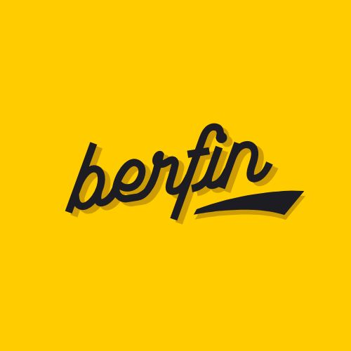

Türkçe
Türkçe İngilizce
İngilizce


Yerebatan Sarnıcı Müzesi, görkemli İstanbul tarihinin izlerini sürebileceğimiz en önemli kültür varlıklarının başında gelmektedir. Doğu Roma İmparatoru I. Justinianus (527-565) tarafından yaptırılan bu büyük yer altı sarnıcı, suyun içinden yükselen ve sayısız gibi görülen mermer sütunlar sebebiyle halk arasında “Yerebatan Sarayı” olarak isimlendirilmiştir. Latincede “Cisterna Basilica” olarak adlandırılan yapının bulunduğu yerde daha önceleri Stoa Bazilikası bulunduğundan, kimilerince “Bazilika Sarnıcı” olarak da anılmaktadır. 1453 yılında İstanbul’un fethinden sonra Topkapı Sarayı’nın ihtiyaçları için bir müddet daha kullanılan tarihi sarnıcın, bölgede yavaş yavaş konutlaşmanın başlamasıyla halk tarafından kullanıldığı da bilinmektedir. 16. yüzyılın ortalarına kadar Batılılar tarafından “fark edilmeyen” yapı, bu dönemde adeta yeniden “keşfedilir”. 1544-1555 yılları arasında İstanbul’da yaşayan Fransız doğa bilimci ve topografya uzmanı Petrus Gyllius, keşfi gerçekleştiren kişi olarak karşımıza çıkar. Sarnıcın ölçülerine dair ilk tespitleri ortaya koyan kişi olan Gyllius’a göre, Konstantinopolis’in en büyük su mahzeni, 336 ayak uzunluğunda,182 ayak genişliğindedir; çevresi ise 224 Roma adımını buluyordur. Yapının sütunlarını saymayı da ihmal etmeyen Petrus Gyllius, tam 336 sütunu kayda geçirir ve sarnıcın tepesinde birçok kuyu olduğunu araştırmasında not düşer. Gyllius’un, “Kovalarla su çekerler; hatta sarnıç içerisinde kürek çekip kandillerle ışıklandırır ve balık avlarlar. Kuyulardan sarnıç içerisine hava ve ışık sızmakta, balıklar ışığın altında yüzmektedirler,” cümleleri, o vakitler mahalle ahalisinin sarnıçtan “haberdar” olduğunu geleceğe aktarmıştır.
